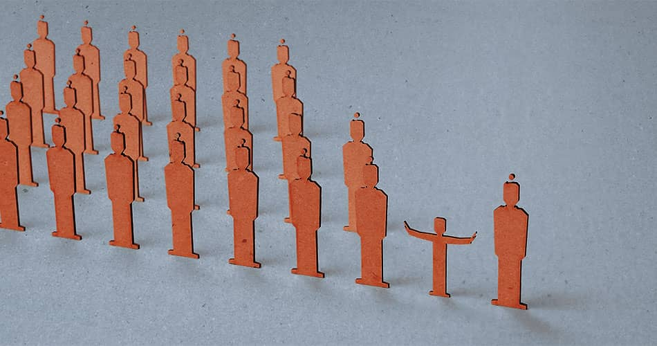

Bettina Röhl Das Wohl des Kindes geht vor
Muss der religiöse Mensch seinem Gott gegebenenfalls nein sagen, wenn das von seiner Religion geforderte Ja dem Grundgesetz zuwiderläuft? Nichts weniger als diese Kardinalfrage hat das Landgericht Köln in seiner Entscheidung zur Strafbarkeit einer religiös motivierten Beschneidung eines vierjährigen muslimischen Jungen mit einem klaren Ja beantwortet.
Muss sich Religion, müssen sich Religionen eine grundgesetzkonforme Reduktion ihrer Normen, ihrer Bräuche, ihrer Verhaltenscodexe gefallen lassen? Muss der religiöse Mensch seinem Gott gegebenenfalls nein sagen, wenn das von seiner Religion geforderte Ja dem Grundgesetz zuwiderläuft? Nichts weniger als diese verfassungsrechtliche und gesellschaftliche Kardinalfrage hat das Landgericht Köln jüngst in seiner Entscheidung zur Strafbarkeit einer religiös motivierten Beschneidung eines vierjährigen muslimischen Jungen mit einem klaren Ja beantwortet.
Während Muslime die Beschneidung ihres männlichen Nachwuchses im Alter zwischen vier und acht Jahren als eine Art obligatorischen Brauch ansehen, ist in der jüdischen Religion die Beschneidung ein zentrales religiöses Gebot. Der abrahamitische Bund zwischen dem acht Tage alten Säugling und Gott durch den Akt der Beschneidung ist ein konstitutiver Bestandteil der Religion, der für die allermeisten Juden nicht verhandelbar ist.
Die Frage ist, ob das Grundgesetz dem Kinderschutz Vorrang vor Elternrecht und Religionsfreiheit einräumt. Wenn es so sein sollte, wofür vieles spricht, dass eine religiöse Beschneidung von Kindern in Deutschland vom Grundgesetz verboten ist, dann stünden sich in diesem laizistischen Staat Recht und Religion in dieser Frage unversöhnlich gegenüber.
Elternrecht
Ein spezielles Grundrecht der Eltern auf eine religiöse Erziehung der Kinder gibt es nicht. Das Elternrecht, in das durch Gesetze ausdrücklich zum Wohle des Kindes eingegriffen werden kann und das selbstverständliche Grenzen hat, siehe etwa die Schulpflicht, ist kein Willkürrecht. Die Vertretungsmacht der Eltern ist keine Allmacht, und Kinder sind kein Eigentum der Eltern.
Eltern können niemanden rechtswirksam beauftragen, ihrem Kind einen Schaden zuzufügen. Und das irreversible Entfernen der Vorhaut eines Jungen ist prima facie eine Verletzung, wie klein sie auch gern geredet wird. Das Erziehungsrecht der Eltern dient letztendlich dazu, die Kinder zu autonomen, selbstbewussten und von den Eltern unabhängigen Erwachsenen zu machen. Die Eltern sollen sich nicht an ihren Kindern selbst verwirklichen, sondern die Kinder auf deren spätere Selbstverwirklichung vorbereiten. So sehr Eltern ihren Kindern ihre Wertvorstellungen de facto mit auf den Weg geben und das auch mit gutem Recht tun, so sehr hat sich das Erziehungsideal durchgesetzt, dass die nachfolgende Generation ohne eine unverhältnismäßige Vorbestimmung durch die Elterngeneration frei zu neuen Ufern aufbrechen kann. Tradition ist sehr wichtig, aber die Fähigkeit zur Freiheit von Tradition ist ebenfalls wichtig.
Das Erziehungsrecht ist mit dem Fortschritt der Moderne immer mehr ein altruistisches Recht geworden, eine Pflicht. Das Kind ist nicht Objekt im Rahmen von Artikel 6, sondern rechtlich ein noch unvollständiges Subjekt.
Kindesrecht
Diesem elterlichen Erziehungsrecht steht das Recht des Kindes auf körperlich-seelische Unverletzlichkeit und auf autonome Selbstbestimmung gegenüber. Artikel 2 sagt nicht, dass körperliche Unversehrtheit und Selbstbestimmung an ein Lebensalter gebunden sind, sondern ganz im Gegenteil. Artikel 2 gesteht jedem Menschen vom ersten bis zum letzten Atemzug dasselbe Grundrecht zu. Alles andere wäre mit der Würde des Menschen nicht vereinbar. Das elterliche Erziehungsrecht kann keinen Eingriff in dieses Grundrecht des Kindes legitimieren, der den Kernbereich der Kindesrechte berührt. Der Staat als Hüter der Verfassung kann nicht nur, er muss das Kindeswohl aktiv schützen. Wo käme eine moderne Gesellschaft hin, wenn die Eltern, legitimiert über ihr Erziehungsrecht, der jeweils nachwachsenden Generation ihren Willen in unverhältnismäßiger Weise aufzwingen könnten?
Darüber hinaus ist der Vergleich mit einer bloßen Bagatelle in mehrfacher Hinsicht zurückzuweisen: Denn die Vorhautbeschneidung mit ungleich stärkeren Schmerzen verknüpft als das Stechen von Ohrringen. Bei der Zirkumzision werden rund 50 Prozent der gesamten Penishaut irreversibel entfernt, was rein quantitativ allenfalls mit einer Amputation der Ohrläppchen vergleichbar wäre und wohl niemand seinen Kindern zumuten würde. Außerdem ist die Vorhaut qualitativ mit den Ohrläppchen überhaupt nicht zu vergleichen, da es sich bei der Vorhaut um das sensibelste Gewebe des männlichen Körpers handelt. Durch das Ohrringstechen werden im Unterschied zur Beschneidung keine wichtigen biologischen Funktionen des Körpers beeinträchtigt. Allerdings ist auch dieser Vorgang problematisch, wenn auch längst nicht so problematisch wie eine Genitalbeschneidung.
Muslime, die im Schulkindalter beschnitten wurden, haben oft traumatische Erinnerungen an das „Fest der Beschneidung“, auch wenn nur wenige den Mut aufbringen, darüber zu sprechen. Eine der seltenen Ausnahmen ist der Kölner Ex-Muslim und Piraten-Aktivist Ali Utlu, der seine Beschneidung so beschrieb: „Wir haben uns gewehrt und geschrien, aber sie haben uns zu viert festgehalten. Für mich war das der totale Horror und das hat sich bei mir für immer eingebrannt.“
Da Schulkinder die Schmerzen der Beschneidung sehr bewusst wahrnehmen, raten immer mehr muslimische Ärzte dazu, die Jungen möglichst früh zu beschneiden, was bei der jüdischen Beschneidung ohnehin die Regel ist. Doch ist die im Judentum praktizierte Beschneidung acht Tage alter Säuglinge wirklich weniger traumatisch? Lange Zeit glaubte man tatsächlich, Säuglinge würden weniger Schmerzen empfinden. Als Indiz hierfür wurde herangezogen, dass manche Neugeborene im Zuge der Beschneidung plötzlich verstummen und zu schlafen scheinen. Heute allerdings weiß man (was allerdings längst noch nicht allgemein bekannt ist), dass sich diese Kinder in einem traumatischen Schockzustand befinden. Denn Neugeborene haben weitaus stärkere Schmerzempfindungen als ältere Kinder oder Erwachsene, denn das schmerzunterdrückende System, das durch Endorphinausschüttungen Schmerzempfindungen erträglicher macht, ist erst Monate nach der Geburt funktionstüchtig.
Zunächst einmal muss man hier feststellen, dass auch die Mandeln und der Blinddarm keineswegs überflüssig sind, weshalb kein vernünftiger Arzt auf den Gedanken käme, diese Organe prophylaktisch zu entfernen, um mögliche spätere Entzündungen zu vermeiden. Eine medizinisch nicht erforderliche Entfernung der Mandeln oder des Blinddarms würde zu Recht als illegitime Körperverletzung gewertet werden. Dies sollte auch für die medizinisch nicht indizierte Vorhautentfernung gelten. Denn die Vorhaut hat wichtige körperliche Funktionen: Sie dient dem Schutz der Eichel vor Hautabschürfung, Austrocknung, Verhornung und Verunreinigung jeder Art. Anfangs ist sie noch mit der Eichel verklebt, wodurch die Eichel vor Ausscheidungen des Jungen im Säuglings- und Kleinkindalter geschützt wird. Mit der Pubertät wird sie zu einer wesentlichen Quelle männlichen Lustempfindens, denn in ihr laufen rund 20.000 empfindliche Rezeptoren zusammen. Sie sorgen dafür, dass die Vorhaut die sensibelste Region des männlichen Körpers ist, weit sensitiver als etwa die Fingerkuppen oder die Lippen.
Wird die Vorhaut, in der etwa 70 Prozent des sensorischen Gewebes des Penis zu finden ist, entfernt, führt dies unweigerlich zu einem Sensibilitätsverlust. Männer, die im Erwachsenenalter beschnitten wurden und sexuelle Erfahrungen vor dem Eingriff hatten, klagen häufig über massive Einbußen ihres sexuellen Lustempfindens. Andere hingegen empfinden den mit der Beschneidung einhergehenden Sensibilitätsverlust als weniger dramatisch. Nur eine Minderheit stellt eine Verbesserung des Lustempfindens fest. Worauf diese unterschiedlichen subjektiven Einschätzungen zurückzuführen sind, ist noch nicht erforscht. Erwiesen ist aber, dass beschnittene Männern im Alter signifikant häufiger unter Erektionsproblemen und Orgasmus-Schwierigkeiten leiden.
Wie aber steht es um die gesundheitlichen Vorteile der Beschneidung, die von Beschneidungsbefürwortern immer wieder ins Feld geführt werden? Die Antwort ist erstaunlich eindeutig: Es gibt keine belastbaren Belege für die gesundheitlichen Vorteile der Beschneidung! Alle Studien, die solche Vorteile in der Vergangenheit nachweisen wollten, gelten inzwischen als widerlegt. Dies trifft auch auf die vielzitierte Studie der WHO zu, in der die Weltgesundheitsbehörde Männern in einigen afrikanischen Ländern anriet, sich beschneiden zu lassen, um das Risiko einer HIV-Ansteckung zu reduzieren. Neuere Überblicksstudien zeigen nämlich, dass beschnittene Männer in den meisten Ländern sogar ein höheres Risiko haben, sich mit HIV zu infizieren, als Männer mit intakter Vorhaut. Die Gründe hierfür sind noch nicht vollständig geklärt. Eine der Ursachen ist aber wohl darin zu sehen, dass beschnittene Männer wegen des erlittenen Sensibilitätsverlusts seltener Kondome benutzen. (Viele berichten, dass sie mit Kondom beim Geschlechtsverkehr kaum noch etwas spüren.) Indem sie Kondome eher meiden, erhöht sich nicht nur ihr Infektionsrisiko, es ist auch wahrscheinlicher, dass sie andere anstecken und somit zur Ausbreitung von Epidemien beitragen. (Im Übrigen erhöht sich das HIV-Ansteckungsrisiko auch unmittelbar durch die Beschneidung, nämlich dann, wenn der Eingriff unter hygienisch bedenklichen Bedingungen stattfindet, was in den von HIV am stärksten betroffenen Regionen häufig der Fall ist.)